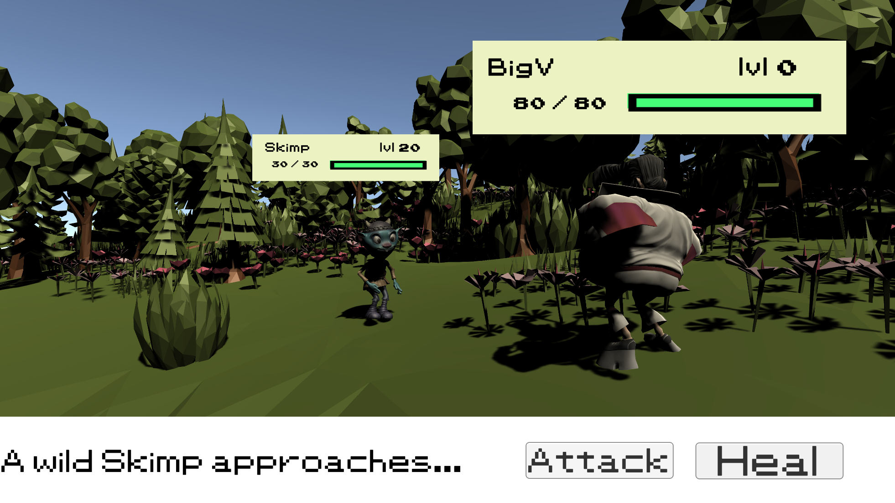

Play BattleDudesBattleDudes is a small game inspired by Pokémon that me and my friends made in Unity. We programmed the gameplay in C# and worked on things like player movement, battles and different game systems. It was one of the biggest Unity projects I've worked on and helped me get more comfortable using C#.
I learned a lot about object-oriented programming and how to organize my scripts better. I also learned more about Unity and how different game systems work together. My favorite part was seeing everything come together into a playable game.
Some bugs were difficult to find because changing one script sometimes caused problems somewhere else. It could be frustrating, but solving those issues taught me a lot about debugging and writing cleaner code.